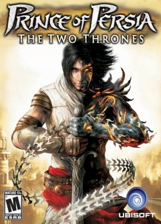

Un platformer (sau joc de platformă) este un joc video în care personajul controlat de jucător sare pe platforme suspendate și/sau peste obstacole pentru a avansa în joc.

La un moment dat, jocul de platformă era cel mai popular gen de joc video. În perioada de vârf a popularității lor, se estimează că între un sfert și o treime din jocurile de consolă erau de acest gen. Nici un alt gen nu a reușit să atingă o pondere la fel de mare. Din 2006, genul a devenit mai puțin popular, cu doar 2% din jocuri fiind de acest gen, în comparație cu 15% în anul 1998.